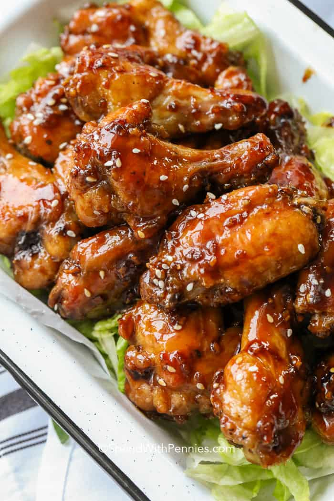

Honey Garlic Chicken Wings

Description
Honey garlic chicken wings are absolutely delicious. They’re sweet and sticky and the perfect addition to any appetizer plate. These chicken wings are oven baked until crispy and then coated with a honey garlic sauce.
Ingredients
Chicken
- 50 split chicken wings
- ¼ cup flour
- salt & pepper to taste
- 1 tablespoon olive oil
Sauce
- ½ cup honey
- ⅓ cup water
- 4 tablespoons soy sauce
- 4 cloves garlic large, crushed
- 1 tablespoon ginger finely diced
- 1 teaspoon corn starch
- ½ teaspoon chili flakes
Instructions
- Preheat oven to 425°F. Dab wings with paper towels until completely dry.
- Toss wings with flour, salt and pepper. Remove any excess flour and brush with olive oil (or use an olive oil spray).
- Line a pan with foil and then place parchment paper on top (you may need 2 pans) and bake for 35 minutes, turning at 20 minutes.
- Meanwhile, combine sauce ingredients in a small pan. Bring to a boil, reduce heat and simmer about 10 minutes or until slightly thickened and sauce coats the back of a spoon.
- Take wings from oven, toss with sauce and return to the oven for 10 minutes, turning after 5 minutes.
- Allow to cool 10 minutes. As the sauce cools, it thickens. Stir the wings every few minutes to coat in the sauce as it thickens.